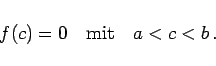

Inhalt Index DeskTop Bronstein

 Funktionen und ihre Darstellung Funktionsbegriff Stetigkeit einer Funktion Eigenschaften stetiger Funktionen
Funktionen und ihre Darstellung Funktionsbegriff Stetigkeit einer Funktion Eigenschaften stetiger Funktionen


Wenn eine Funktion f(x) in einem abgeschlossenen Intervall [a,b] definiert und stetig ist und die Funktionswerte in den Endpunkten des Intervalls f(a) und f(b) verschiedene Vorzeichen besitzen, dann existiert mindestens ein Wert c, für den f(x) zu null wird:
|  | (2.32) |
Geometrisch gedeutet, schneidet die Kurve einer stetigen Funktion beim Übergang von der einen Seite der x-Achse auf die andere dabei wenigstens einmal die x-Achse.